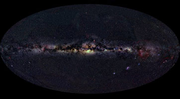
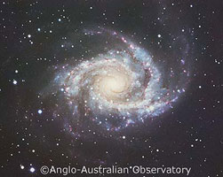
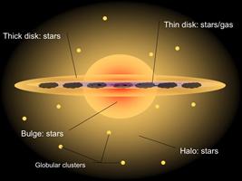

| The bright glow of the Milky Way stretching across the night sky is one of the greatest sights afforded us. Having inspired star-gazers for millenia, we now know that this band of light is actually the view of our home galaxy – from the inside. The term ‘Milky Way’, once used simply to refer to the misty arch of stars in the night sky, was later adopted as the name for our Galaxy as a whole. In the following discussion, it is the Milky Way galaxy to which we refer. |

An all-sky view clearly shows the bright glow of the Milky Way stretching across the night sky. This is the view our home galaxy from the inside.
Credit: A. Mellinger |
|

NGC2997 is a Sc galaxy similar to the Milky Way. This is perhaps what our Galaxy looks like from the outside
Credit: AAO/David Malin |

The Milky Way is a fairly typical spiral galaxy with distinct structural components. It contains a thin disk (diameter 100,000 light years approx.), a thick disk, a bulge (diameter 25,000 light years approx.), and a stellar halo which is home to about 150 globular clusters. The Sun, one of the hundreds of billions of stars comprising the Milky Way, is situated in the thin disk, about 25,000 light years from the centre of the Galactic bulge. Originally thought to be of Hubble type Sb or Sc (Sbc), astronomers now believe that the Milky Way is has a central bar and is therefore a loosely wound, barred spiral galaxy – Hubble type SBbc.
In addition to its visible structure, and similarly to other spiral galaxies, the Milky Way contains a dark halo of presumably non-stellar (perhaps even non-baryonic) matter. This spherical halo extends well beyond the edge of the thin disk, and the motions of galaxies around the Milky Way suggest it has a total mass of 1,000 billion solar masses. This is about ten times the mass contained within the visible material!
Given our position within it, it is perhaps surprising that the formation of the Milky Way is still an active area of investigation. The different stellar components of the Milky Way are believed to have formed at different times (with star formation still occuring in the thin disk), and evidence for all three of the currently recognised galaxy formation mechanisms (primordial collapse, hierarchical clustering and secular evolution) is present.
Like most galaxies, the Milky Way does not exist in isolation. Along with the Andromeda galaxy, the Large and Small Magellanic Clouds and approximately 30 dwarf galaxies, it forms part of the Local Group. The Milky Way is currently undergoing minor mergers with at least two of the Local Group dwarf galaxies – the Sagittarius and Canis Major dwarfs – and resides in the periphery of the great Virgo cluster with which it will also one day merge.